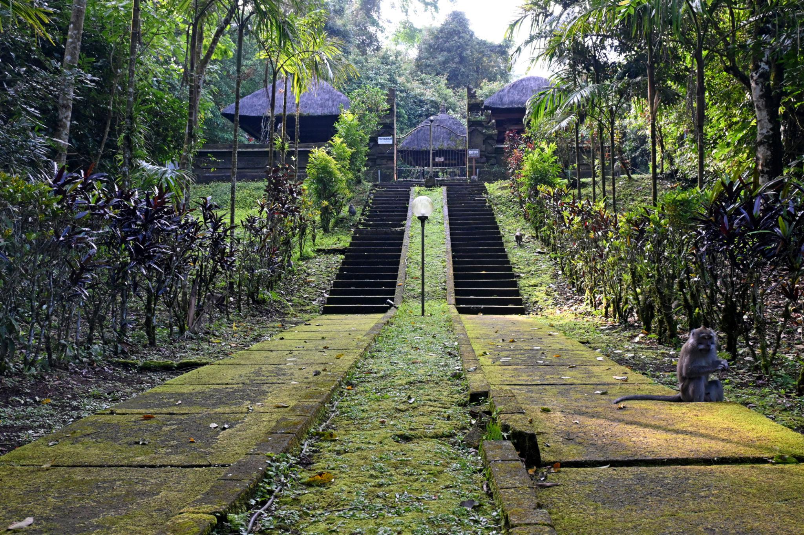
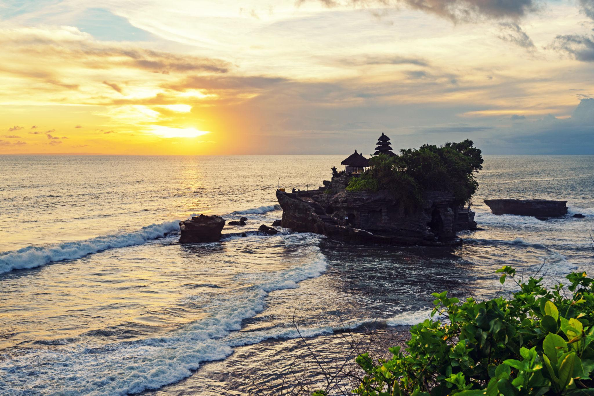
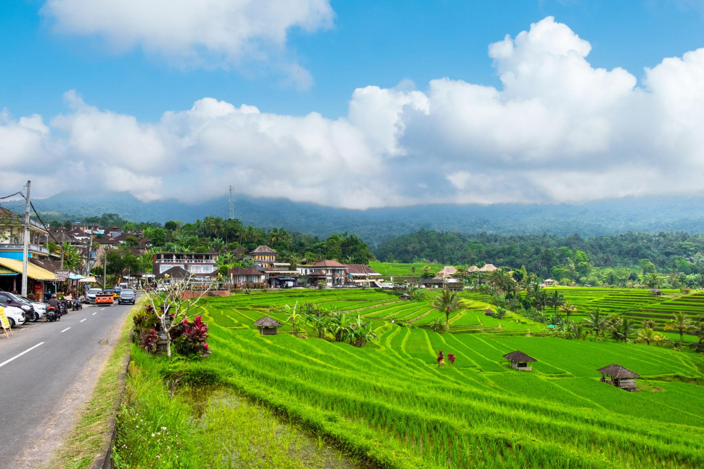

Tour Highlights
Places You Will Visit
A scenic journey through Bali’s rice terraces, mountain temples, countryside, and sunset coastline.

Jatiluwih Rice Terrace
Explore Bali’s famous UNESCO rice terraces with wide green landscapes and peaceful village views.

Batukaru Temple
A quiet mountain temple surrounded by tropical forest and sacred Balinese atmosphere.

Tanah Lot Temple
One of Bali’s most iconic sea temples, famous for dramatic ocean views and sunset scenery.

Bali Countryside
Enjoy scenic village roads, rice fields, traditional houses, and the calm side of rural Bali.

Coffee Plantation
Discover Balinese coffee-making and enjoy a relaxing tasting experience with tropical views.